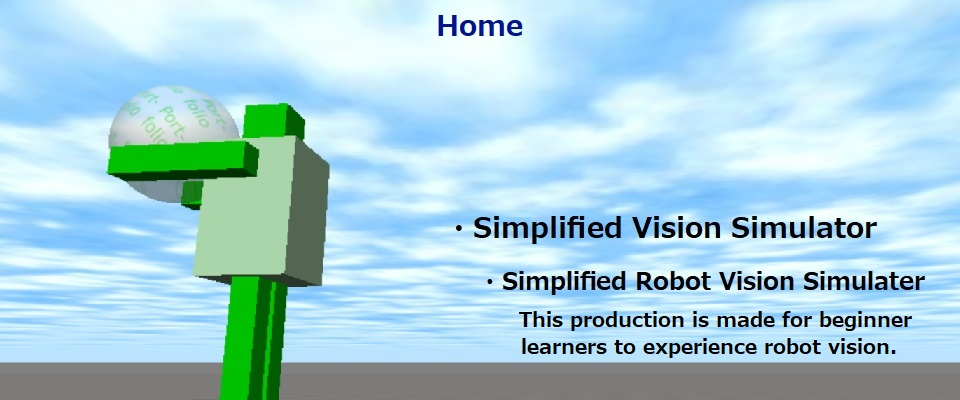

Skills
Back to home
C++
Non-semantic segmentationの評価用データセット(BSDS)を用いて segmentationの評価を行っていました。また、Opencvを用いて、画像処理を行うモデルを作成していました。 更に、このPortfolioページ内のProductsの作成に当たり、Open dynamics engine(ode)を学び直しました。
Python
C++で書いたSegmentation評価用のソースや勾配法のソースをPythonに書き直しました。 書き直すに当たり、NumPyのインデクシングやSciPyを用いて高速化を行ないました。 現在、scikit-learnやPyTorchを用いて機械学習を学んでいます。
HTML, CSS, Javascript
このPortfolioページの作成に当たり、HTML、CSS、Javascriptを学び直しました。